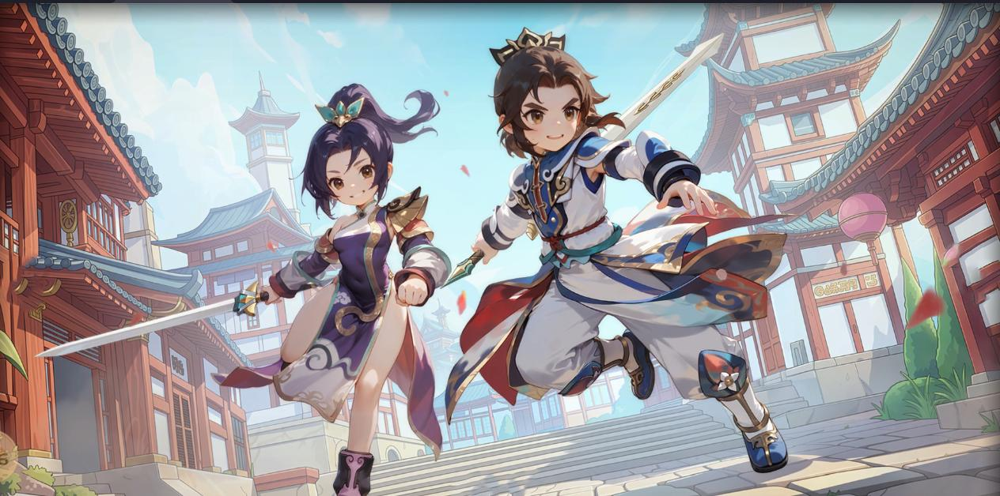
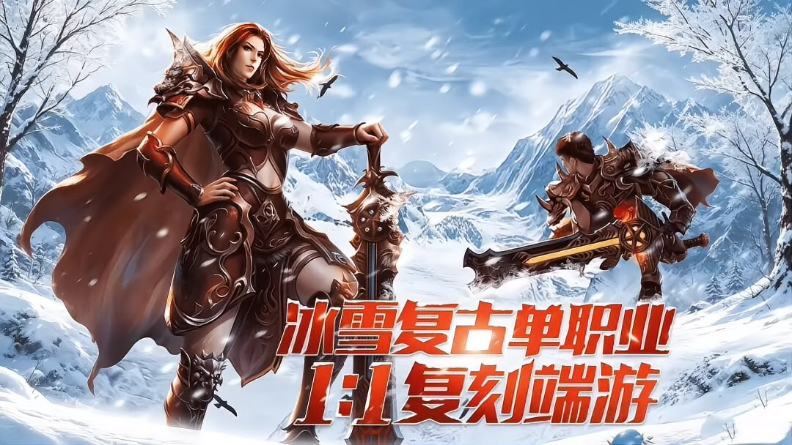

贰点零江湖复古武侠 · 三端互通
复刻经典 2.0 版本的怀旧武侠：五大职业、正邪阵营、四层地图，安卓与 iOS、PC 三端数据互通。商城不卖战力，装备与材料靠自己打。
- 职业
- 刀客 / 剑客 / 医师 / 弓手 / 枪客
- 地图
- 新手村 · 野外 · 副本区 · 主城
- 经济
- 摆摊无手续费，非绑定可交易
- 付费
- 无首充，仅月卡类便利特权
获取游戏
收录 4 篇进入分站
贰点零江湖 / 小小屠龙 / 桃园：将帅录
游戏攻略，收在一处。开荒怎么走、职业怎么选、材料什么时候卖、攻沙站哪里——按游戏和分类查，直接照着做。
三套完全不同的节奏：武侠看重发育与门派，冰雪服看重转生与攻沙，三国回合看重阵容与站位。

复刻经典 2.0 版本的怀旧武侠：五大职业、正邪阵营、四层地图，安卓与 iOS、PC 三端数据互通。商城不卖战力，装备与材料靠自己打。
获取游戏

冰雪复古传奇：从起源冰城起步，攒够转生材料进二大陆冰雪之城。小怪概率出光柱，BOSS 定时刷新，非绑定装备可以自由摆摊交易。
获取游戏

Q 版 3D 幻想三国回合制：盾系、谋士、弓手、辅助、突骑、掠阵六类定位，胜负更多取决于阵容结构与站位，而不是单纯数值。三端互通。
获取游戏
百家号 / 头条号 / 知乎 / 公众号，同名「游戏攻略总站」，新攻略第一时间发在那边。
按游戏、按分类筛，或直接搜关键词。每条都写了适用阶段，先看结论再看细节。
整理：2026 年 11 月
没有匹配的攻略。换个关键词，或点“清除筛选”看全部。
以《贰点零江湖》的四层地图为例：每一层只做它该做的事。
01
只做任务链。村内经验随等级递减，主线一断就往外走。
停留 1 天内02
按等级带推进，精英怪顺手清，高等级图组队去。
主要练级区03
装备与材料的主产出。上线先清体力，再回野外。
每日固定04
拍卖行看价、摆摊出货、参加限时活动，不在这练级。
交易与活动复古武侠 · 三端互通
复刻经典 2.0 版本的怀旧武侠：五大职业、正邪阵营、四层地图，安卓与 iOS、PC 三端数据互通。商城不卖战力，装备与材料靠自己打。
获取游戏 · 开服咨询
冰雪复古 · 打宝攻沙
冰雪复古传奇：从起源冰城起步，攒够转生材料进二大陆冰雪之城。小怪概率出光柱，BOSS 定时刷新，非绑定装备可以自由摆摊交易。
获取游戏 · 开服咨询
Q 版三国 · 回合策略
Q 版 3D 幻想三国回合制：盾系、谋士、弓手、辅助、突骑、掠阵六类定位，胜负更多取决于阵容结构与站位，而不是单纯数值。三端互通。
获取游戏 · 开服咨询